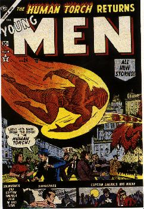
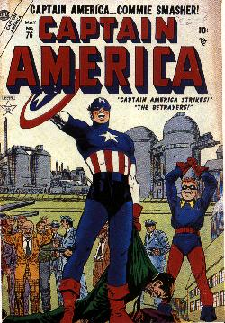

|
|
|
History of
Comics in Crisis 1950's Often sentimentalized as complacent, happy days, the 1950's were actually a time of considerable tension in the United States. On the surface, things could hardly have been better. The country had come through the ordeal of World War II comparatively unscathed, and the economy was strong enough to allow generous foreign aid around the world. Yet there were undercurrents of fear and anxiety throughout the land. Conventional wisdom asserted that dropping atomic bombs on Hiroshima and Nagasaki in 1945 had saved lives and shortened the war. Nonetheless, over 100,000 people had died in those two blasts. Humanity had acquired the power to eradicate itself. We built underground shelters to protect ourselves and saw flying saucers in the sky. The alien beings inside these ships might be enemies or perhaps they were saviors come to relieve us from the awesome responsibility of policing the planet. In short, the country had the jitters.
Out of this uneasy atmosphere came Marvel Boy (December 1950), Marvel's first and only new super hero of the decade. Marvel Boy was Bob Grayson, an American lad of seventeen raised on the planet Uranus by his father, who had ended up there when this rocket made an unexpected "right angle turn." Blessed with the powers of strength, speed and mental telepathy, Bob returns to the land of his birth upon learning that "Earth is in a bad way", then trades in his Uranian flying saucer for an American spaceship. All things considered, it's no suprise that the Marvel Boy comic book lasted only two issues. Yet in 1950, Marvel couldn't care less. Like the country, the company seemed strong and fat and happy; nobody felt the trubulence beneath the surface. Financial reverses for Marvel might have been considered a possibility at some point, but not even the wildest imaginations in the business could have dreamed that comic book creators would soon join the Reds and the Martians on the roster of American's enemies, and that the whole industry would be teetering on the brink of doom.
In 1950 Gene Colan and his colleagues suddenly found themselves working in a new genre: war comics inspired by the outbreak of the Korean War. During this conflict Marvel began to produce comic books very different from the ones that had been published throughout World War II. The battles deplicted were no longer a matter of super heroes bashing bad guys. Comics now began to show the pain, misery and fear of ordinary soldiers. Perhaps the change stemmed from the experience of writers and artists who had seen combat themselves. Marvel offered generically titled books like War Comics, Battle, Combat, War Combat, War Action and Battlefront. A few macho heroes were created, notably Combat Kelly (November 1951), but the majority of Marvel's comics in the genre emphasized the fact that war was a brutal and bloody business.  Publisher Martin Goodman's decision to cut back on office overhead and artists salaries had a specific purpose. With comic book production at an all-time high, Goodman decided to mazimize profits by breaking with his distributor, Kable News, and by setting up his own national distributor organization, the Atlas News Company. With the Atlas distribution operation up and running, Martin Goodman suggested that Stan Lee, who had surived the layoff, try a revival of the three top characters for Timely's Golden Age. Super hero stories, once the mainstay of the company, had become virtually the only type of comics that Atlas wasn't publishing. So an experimental comeback ws launched in the twenty fourth issue of an unimportant book called Young Men (December 1953). The highlight of the Atlas super hero revival was Bill Everett's work on his character The Sub-Mariner. The quality of Everrett's improved technique was reflected in the fact that the new Sub-Mariner (April 1954) lasted for ten issues, while The Human Torch and Captain America lasted for only three issues each.
The artist who revived Captain America was John Romita, who had begun moonlighting for Marvel in 1951 while he was still serving int the army. By 1953, Romita was out of uniform and ready to take on the challenge of illustration Captain America's new incarnation as a hero for the 1950's. Meanwhile, Jack Kirby and his partner Joe Simon were spoofing such attitudes with Fighting American for Prize Publications. And in fact the gung-ho posture of the new Cap was an example of "too little, too late." Identifying foreign foes was going out of style. Encouraged by politicians, the country had turned its search for enemies inward. Americans had begun calling each other un-American, and comics were about to take the fall.  Dr. Fredric Wertham, a New York psychiatrist, was mad at comic books, and he had been for years. A specialist in the treatment of disturbed children and juvenile delinquents, Wertham observed that most of his patients read comic books. He claimed to have determined that comic books were surely detrimental to "mental hygiene," and that they encouraged children to commit crimes. Armed with a cause, Wertham embarked on a campaign of lectures, public statements and magazine articles that culminated in 1954 with the publishing of a provocative and sensationalistic book. Seduction of the Innocent, Wertham's compendium of half-truths, scared the hell out of a lot of parents. Wertham's major targets were the violent horror and crime comic books that in fact were not appropriate reading matter for younger kids, but to Wertham every comic was a crime comic. Wertham found super heroes especially objectionable, as he told the Senate Subcommittee to Investigate Juvenile Delinquency during his testimony in April 1954. Not even love comics escaped Wertham's wrath. He warned that perverts congregated around stores that sold comic books, looking for kids to corrupt. Whatever he might have intended, he set off a furor that nearly killed comic books completely.
RETURN TO THE MARVEL'S MAIN HOME PAGE
|